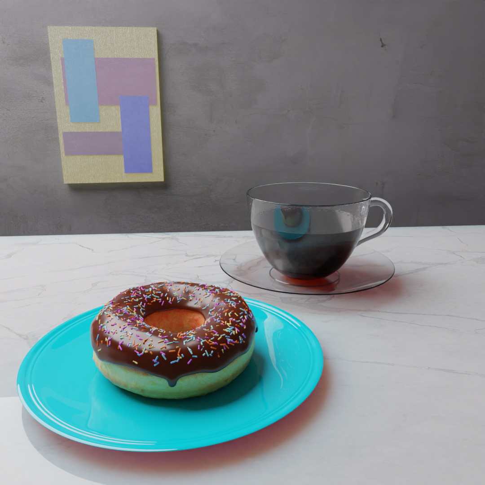
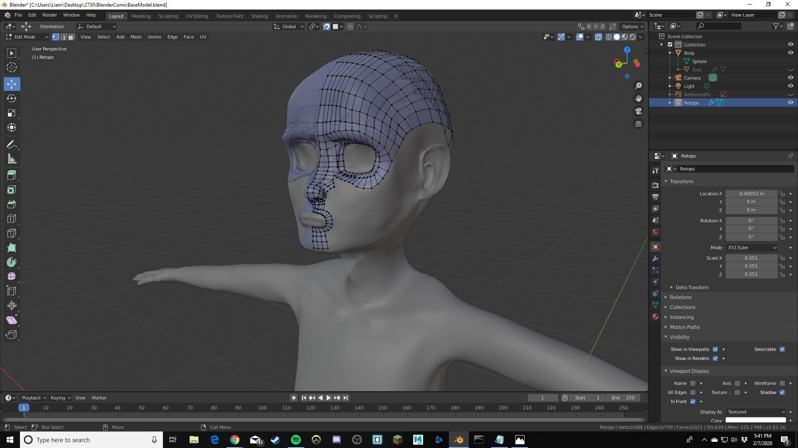

A collection of my various creations
Underlined titles are links!
- Accompanied by an original song made in Logic Pro, my "Blithe Life: Dancing" is a minimalistic and lo-fi reimagination of the dance scene in one of my favorite movies, WALL-E (the music is inspired by the artist Blithe Field). The entire scene was coded BY HAND using A-Frame and the link directs you to a screen recording of a still shot of the interactive experience that is linked below. The link below is a functional html site so feel free to right-click and hit inspect to see the meticulous code that brought this animation to life! Here is the link to the interactive version where you can navigate using arrow keys and control the POV with your mouse. Here is a link to the Github repository for the site where you can see the actual code for the scene.
-This is another A-Frame project of mine that is a more interactive experience which reimagines a normal, 2D Mondrian painting as a dynamic, interactive, and moving form. The link brings you to another screen recording accompanied by another original song made in Logic Pro. Unfortunately, I do not have the interactive link published online.

- This is my personalized Blender donut I made while following the tutorials of the amazing Blender Guru, Andrew Price. There is also a video of a brief slide animation with the donut on my Youtube channel, but the high quality photo does more justice to the realism of the scene.

- This is the current state of the character I am modeling for my class on Constructing The Moving Image. It is quite rough and I still have a lot of work to do, but this alone with the donut showcase my potential and relative competency for using industry compatible 3D software.

- I recently started the retopology of my character to drastically reduce the number of vertices in my model so that I can make UV unwrapping easier and also have a low poly model to transfer into Unity to use this character in a game.
- Here's a link to my soundcloud, which even though it is not terribly relevant to 3D modeling, my songs there showcase my creativity a lot and the paintings that you see for any song images are original works. Greatest Hits include "For My Brother" and "I Finally Feel At ease".